Alya
Una chica de secundaria de cabello plateado que llama la atención dondequiera que va. Se queja de su vecino desmotivado, pero en secreto suelta comentarios coquetos en ruso.
Yodayo es el patio de recreo creativo definitivo para los fans del anime. Entra en Tavern y chatea con millones de personajes de anime únicos, crea historias de rol inmersivas, genera impresionantes ilustraciones de anime y videos cinematográficos, compón música, clona voces y entrena LoRAs personalizados. Ya sea que quieras un compañero ingenioso, una aventura de fantasía o un estudio creativo completo, Yodayo te brinda las herramientas de IA para hacerlo realidad.
Conoce a compañeras anime expresivas listas para juegos de rol, romance y aventura.
Una chica de secundaria de cabello plateado que llama la atención dondequiera que va. Se queja de su vecino desmotivado, pero en secreto suelta comentarios coquetos en ruso.
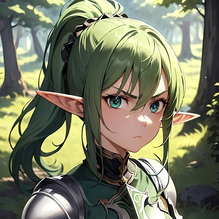
Una caballera elfa que juró proteger los bosques antiguos. Noble, elegante y siempre lista para desenvainar su espada por aquellos en quienes confía.
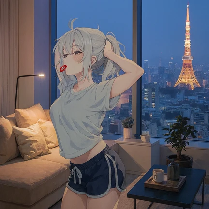
Tu compañero de cuarto relajado que conoce todos tus hábitos. Amigable, juguetón y siempre dispuesto a conversaciones nocturnas.
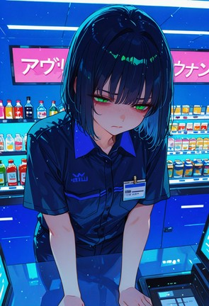
La chica detrás del mostrador que recuerda el pedido de cada cliente habitual. Cálida, observadora y llena de un encanto silencioso.
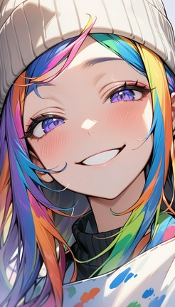
El asistente creativo en forma de anime. Alegre, servicial y listo para intercambiar ideas sobre arte, historias y personajes contigo.
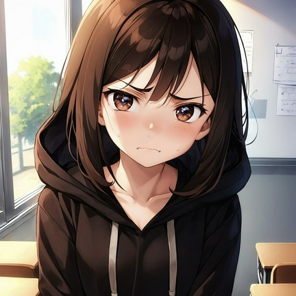
Un alma compleja que lidia con el peso del acoso escolar. Una compañía paciente y comprensiva puede ayudarla a abrirse de nuevo.
Tu mejor amiga que siempre te respalda. Leal, divertida y lista para cualquier aventura que puedas imaginar.
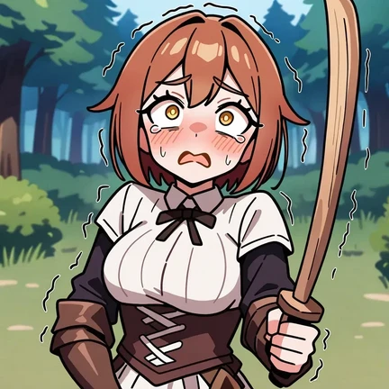
Una perdedora nerviosa del pueblo que eligió el objetivo equivocado. Ayúdala a sobrevivir al encuentro, o enséñale una lección que no olvidará.
Conoce a expresivos compañeros masculinos de anime listos para juegos de rol, romance y aventura.
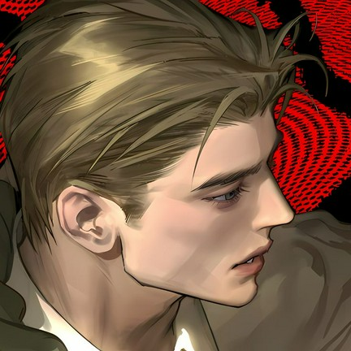
Un estratega tranquilo y sereno con un pasado misterioso. Valora la inteligencia y la lealtad por encima de todo.
Un profesor estricto pero encantador que siempre te hace quedarte después de clase. Sus bromas de Halloween son legendarias.
El capitán del equipo de hockey de tu novio. Competitivo, seguro de sí mismo y sorprendentemente protector.
Lidera tu propia aventura ninja en un mundo de chakra, rivales y aldeas ocultas. La historia se adapta a cada elección.
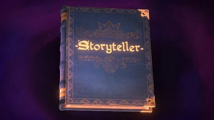
Un bardo errante que crea historias sobre la marcha. Deja que teja una fantasía personalizada en torno a cada uno de tus deseos.
Embárcate en épicas misiones a través de mazmorras, reinos y guaridas de dragones en este clásico RPG de fantasía animado.
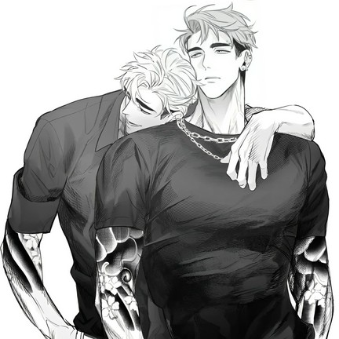
Dos guardaespaldas de élite asignados para mantenerte a salvo. El doble de protección, el doble de tensión, el doble de encanto.
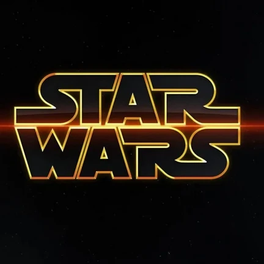
Salta a la velocidad de la luz en una galaxia muy, muy lejana. Forja alianzas, lucha contra imperios y escribe tu propia saga espacial.
Desde compañeros interactivos hasta medios generativos de nivel profesional, Yodayo incluye potentes herramientas de IA detrás de una interfaz limpia e inspirada en el anime.
Experimenta juegos de rol interactivos, conversaciones significativas y aventuras interminables con millones de personajes de anime impulsados por los mejores LLMs.
Crea personajes de anime, escenas dinámicas y videos cinematográficos al instante con el Generador de Arte y Video con IA impulsado por Minimax, Google Veo 3, Kling y más.
Accede a más de 105,000 modelos y hechizos que van desde Stable Diffusion hasta Flux e Illustrious-XL para estilos creativos ilimitados.
Genera voz natural con tecnología de voz AI y crea música hermosa a partir de tus letras con el generador de música AI.
Crea, edita y da vida a tu visión con Yoda-chan, tu asistente creativo impulsado por IA ahora en versión beta.
Entrena LoRAs y hechizos personalizados para lograr personajes consistentes y estilos visuales únicos en todas tus creaciones.
Cada captura de pantalla muestra una característica real de la plataforma. Haz clic en cualquier sección para comenzar a explorar las mismas herramientas tú mismo.
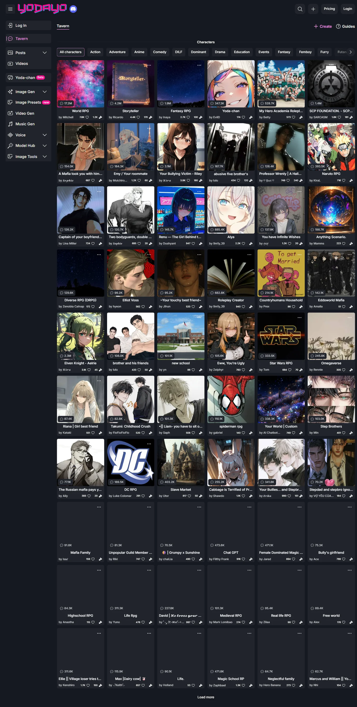
Explora millones de personajes anime creados por la comunidad, filtra por género, estado de ánimo y popularidad, y encuentra el compañero perfecto para cada historia.
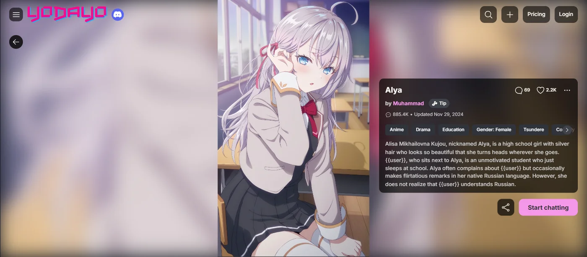
Cada personaje muestra un retrato, créditos del creador, etiquetas, estadísticas de interacción y una historia completa para que sepas exactamente con quién estás chateando.
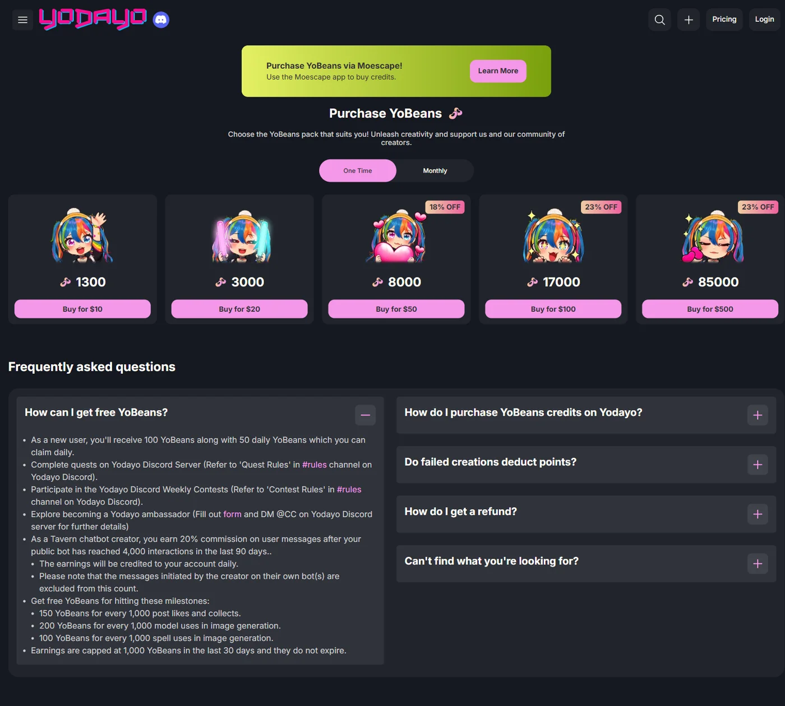
Elija entre paquetes únicos de YoBeans o suscripciones mensuales con créditos adicionales, experiencia sin anuncios y acceso ampliado a modelos.
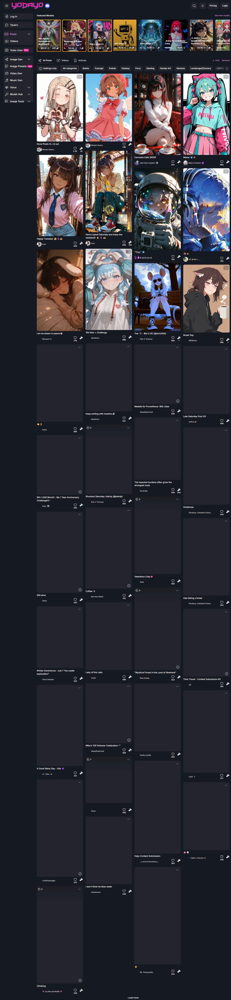
Explora y colecciona imágenes y videos creados por la comunidad en un espacio vibrante, inspírate y comparte tus propias obras de arte generadas por IA.
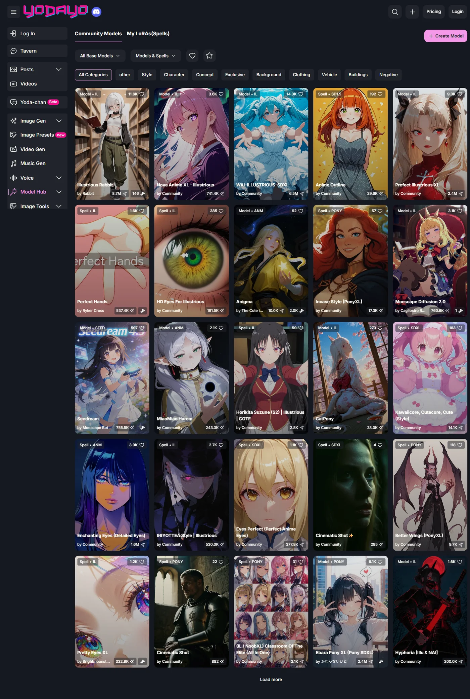
Sube, explora y utiliza más de 105,000 modelos y hechizos de IA para crear arte anime en miles de estilos diferentes.
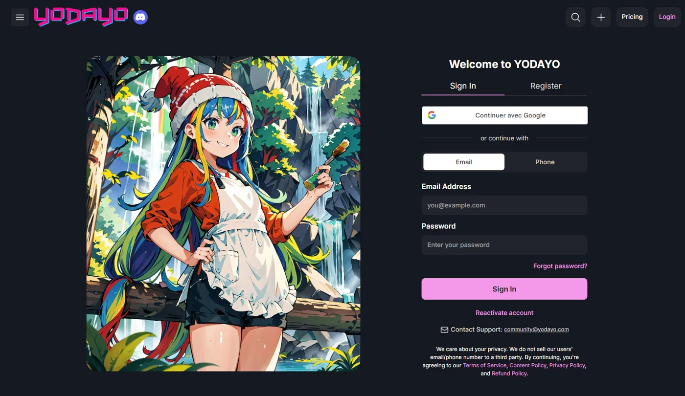
Regístrate en segundos y comienza a crear. La incorporación optimizada te lleva desde la página de inicio hasta tu primer chat o generación de imágenes rápidamente.
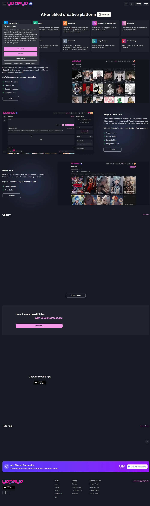
Desde el roleplay de Tavern hasta la generación de imágenes, videos, voz y música, la página principal pone cada herramienta creativa a un solo clic de distancia.
Desbloquea acceso prioritario, créditos adicionales y modelos avanzados con una suscripción, o consigue un paquete único de YoBeans cuando necesites más.
Respuestas rápidas sobre créditos, personajes, suscripciones y cómo comenzar en Yodayo.
Como nuevo usuario, recibirás 100 YoBeans junto con 50 YoBeans diarios que puedes reclamar cada día. Completa misiones en el servidor de Discord de Yodayo , participa en concursos semanales o explora la posibilidad de convertirte en embajador de Yodayo . Los creadores de chatbots de Tavern ganan una comisión del 20% sobre los mensajes de los usuarios después de que su bot público alcance las 4,000 interacciones en 90 días. También puedes ganar YoBeans gratis por hitos: 150 YoBeans por cada 1,000 me gusta y colecciones en publicaciones, 200 por cada 1,000 usos de modelos y 100 por cada 1,000 usos de hechizos. Las ganancias están limitadas a 1,000 YoBeans en 30 días y no caducan.
Puedes comprar créditos YoBeans a través de la aplicación Moescape. Visita la página de Compra para elegir el paquete o la suscripción que más te convenga y desbloquear la experiencia creativa completa.
No, no perderás ningún YoBeans si falla la generación de tu imagen. Solo las creaciones exitosas consumen créditos.
Los reembolsos solo son aplicables en circunstancias excepcionales. Consulte la política de reembolsos para obtener todos los detalles.
Yodayo te permite chatear con personajes de anime IA en Tavern, generar imágenes y videos de anime, crear música y clips de voz, entrenar LoRAs personalizados y explorar un enorme Model Hub con más de 105,000 modelos y hechizos.
Sí. Yodayo ofrece una aplicación móvil para que puedas chatear, crear y explorar sobre la marcha. Descarga el APK directamente desde el sitio web o encuentra la aplicación en las plataformas compatibles.
Absolutamente. Usa las herramientas de creación de personajes para diseñar personas, escribir libros de historia, clonar voces y subir imágenes para dar vida a tus personajes originales de anime.
Los chats de Tavern están impulsados por los principales LLM, incluyendo GLM, DeepSeek, Claude, Ultra, Elune, Apollo 70B, Nephra 70B y más, según tu plan de suscripción.